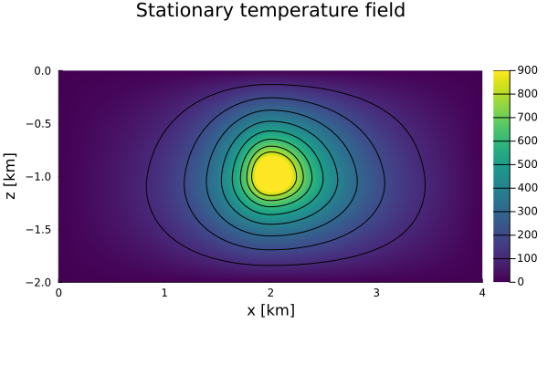
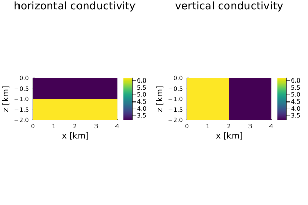

Poisson Problem (variable $k$)
This example solves the steady-state 2-D temperature equation—i.e., the Poisson equation—assuming a variable thermal conductivity $k$.
For more details on the model setup and the physics or the numerical scheme, please see the exercise or the documentation
First one needs to load the required packages:
using GeoModBox.HeatEquation.TwoD, ExtendableSparse, PlotsNow, one needs to define the geometrical and physical constants.
# Physikalischer Parameter ---------------------------------------------- #
P = (
L = 4e3, # [m]
H = 2e3, # [m]
k1 = 3.2, # Waermeleitfaehigkeit, W/m/K
k2 = 6.2, # Waermeleitfaehigkeit, W/m/K
Wcave = 200, #
Hcave = 200, #
Dcave = 1e3, #
Xcave = 2.0e3,
Q = 0.3 # W/m³ Q = rho*H
)
# ----------------------------------------------------------------------- #Next, define the grid and its coordinates.
# Numerische Parameter -------------------------------------------------- #
NC = (
x = 641, # Gitterpunkte in x-Richtung
y = 321 # Gitterpunkte in y-Richtung
)
NV = (
x = NC.x + 1,
y = NC.y + 1
)
# Initialize grid spacing ----------------------------------------------- #
Δ = (
x = P.L/NC.x,
y = P.H/NC.y
)
# ----------------------------------------------------------------------- #
# Generate the grid ----------------------------------------------------- #
x = (
c = LinRange(0.0 + Δ.x/2.0, P.L - Δ.x/2.0, NC.x),
v = LinRange(0.0, P.L, NV.x)
)
y = (
c = LinRange(-P.H + Δ.y/2.0, 0.0 - Δ.y/2.0, NC.y),
v = LinRange(-P.H, 0.0, NV.y)
)
# ----------------------------------------------------------------------- #Dirichlet boundary conditions are applied on all sides.
# Boundary conditions --------------------------------------------------- #
BC = (
type = (W=:Dirichlet, E=:Dirichlet, N=:Dirichlet, S=:Dirichlet),
# type = (W=:Dirichlet, E=:Dirichlet, N=:Dirichlet, S=:Dirichlet),
val = (W=zeros(NC.y,1),E=zeros(NC.y,1),N=zeros(NC.x,1),S=zeros(NC.x,1))
)
# ----------------------------------------------------------------------- #In addition to temperature and heat source terms, two fields must be defined for thermal conductivity—one for the horizontal and one for the vertical components. The heat source and thermal conductivity must be assigned to their corresponding grid nodes.
# Initialcondition ------------------------------------------------------ #
D = (
Q = zeros(NC...), # (row,col)
T = zeros(NC...),
kx = zeros(NV.x,NC.y),
ky = zeros(NC.x,NV.y)
)
# Heat production rate in the anomaly ---
for i = 1:NC.x, j = 1:NC.y
if x.c[i] >= (P.Xcave-P.Wcave/2.0) && x.c[i] <=(P.Xcave+P.Wcave/2.0) &&
y.c[j] >= -P.Dcave-P.Hcave/2.0 && y.c[j] <= -P.Dcave+P.Hcave/2.0
D.Q[i,j] = P.Q
end
end
D.kx[:,y.c.>=-P.H/2.0] .= P.k1
D.kx[:,y.c.<-P.H/2.0] .= P.k2
D.ky[x.c.>=P.L/2.0,:] .= P.k1
D.ky[x.c.<P.L/2.0,:] .= P.k2
# ----------------------------------------------------------------------- #To solve the linear system of equations, define the coefficient matrix, determine the degrees of freedom, and initialize the right-hand side vector.
# Linear System of Equations -------------------------------------------- #
Num = (T=reshape(1:NC.x*NC.y, NC.x, NC.y),)
ndof = maximum(Num.T)
K = ExtendableSparseMatrix(ndof,ndof)
rhs = zeros(ndof)
# ----------------------------------------------------------------------- #With all parameters defined, the linear system can now be solved using the function Poisson2D!().
# Solve equation -------------------------------------------------------- #
Poisson2D!(D.T, D.Q, D.kx, D.ky, Δ.x, Δ.y, NC, BC, K, rhs, Num )
# ----------------------------------------------------------------------- #Finally, the steady-state temperature solution is visualized along with the horizontal and vertical thermal conductivity fields for comparison.
# Plot solution --------------------------------------------------------- #
p = heatmap(x.c ./ 1e3, y.c ./ 1e3, D.T',
color=:viridis, colorbar=true, aspect_ratio=:equal,
xlabel="x [km]", ylabel="z [km]",
title="Stationary temperature field",
xlims=(0, P.L/1e3), ylims=(-P.H/1e3, 0.0),
clims=(0, 900))
contour!(p, x.c ./ 1e3, y.c ./ 1e3, D.T',
levels=100:100:1500, linecolor=:black,subplot=1)
q = heatmap(x.v ./ 1e3, y.c ./ 1e3, D.kx',
color=:viridis, colorbar=true, aspect_ratio=:equal,
xlabel="x [km]", ylabel="z [km]",
title="horizontal conductivity",
xlims=(0, P.L/1e3), ylims=(-P.H/1e3, 0.0),
layout=(1,2),subplot=1)
heatmap!(q,x.c ./ 1e3, y.v ./ 1e3, D.ky',
color=:viridis, colorbar=true, aspect_ratio=:equal,
xlabel="x [km]", ylabel="z [km]",
title="vertical conductivity",
xlims=(0, P.L/1e3), ylims=(-P.H/1e3, 0.0),
subplot=2)
display(p)
display(q)
savefig(p,"./examples/DiffusionEquation/2D/Results/Poisson_variable_k_01.png")
savefig(q,"./examples/DiffusionEquation/2D/Results/Poisson_variable_k_02.png")
# ----------------------------------------------------------------------- #
Figure 1. Temperature distribution for variable thermal parameters.

Figure 2. Thermal conductivity distribution.